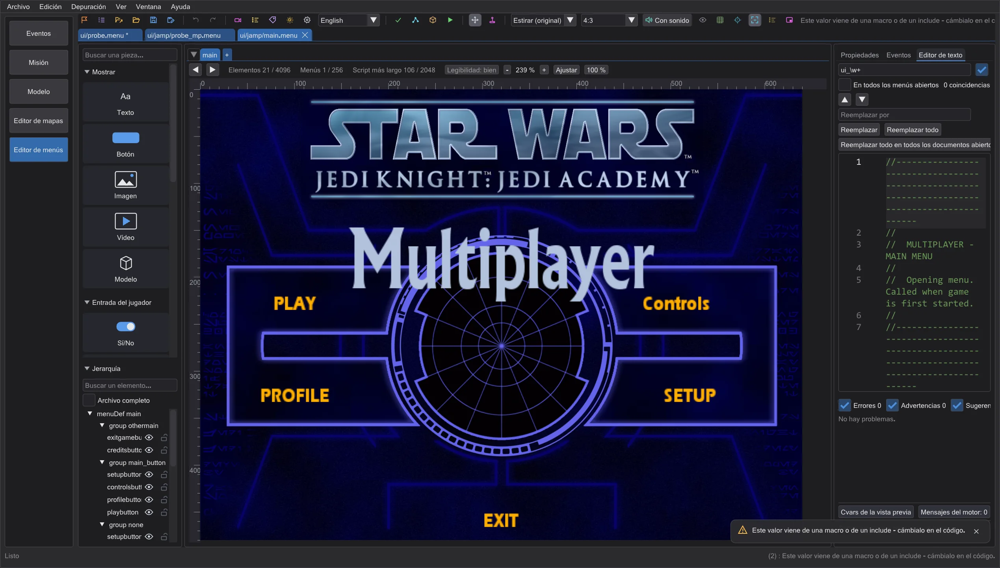
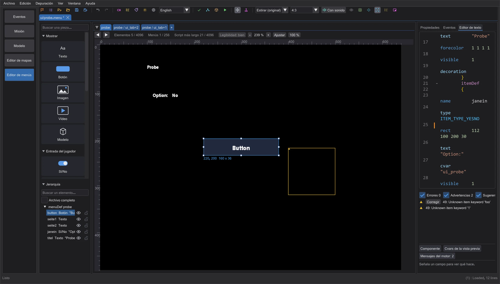
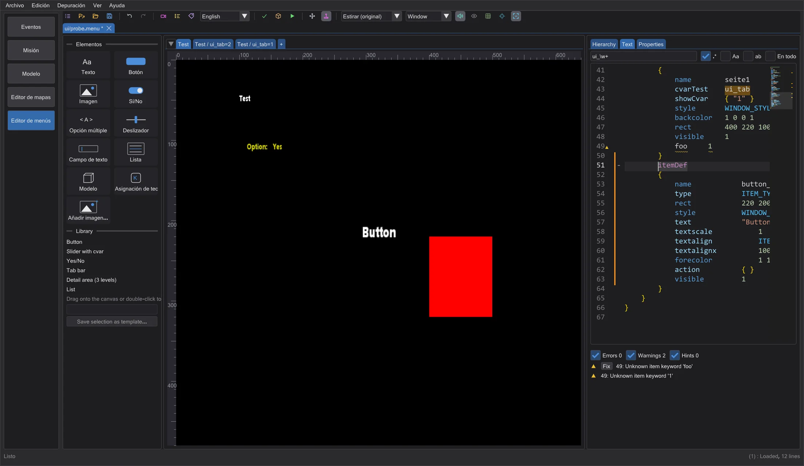
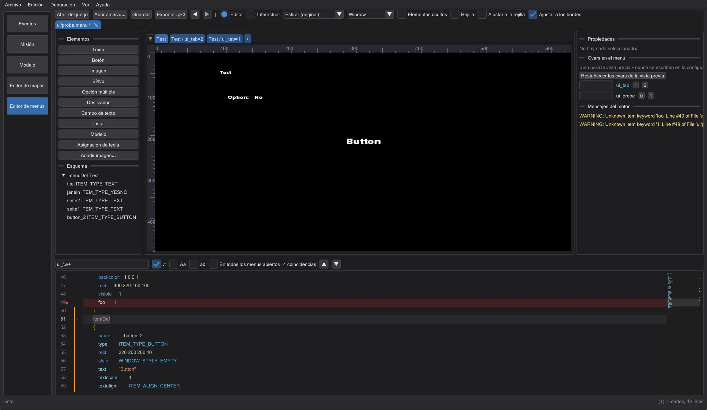

Editor de menús
Edita los menús del juego (.menu) como texto y en un lienzo de 640x480 a la vez: leídos, dibujados y manejados como en el juego.
Abrir un menú#
Pulsa Editor de menús en la barra de modos. Abrir del juego lista cada menú ui/ del juego configurado en las preferencias (leído del .pk3, nunca cambiado); Abrir archivo o soltar un archivo abre uno del disco. La ruta decide cómo se lee el archivo, exactamente como el juego: ui/jamp/, ui/jk2mp/ y ui/MD_MP/ con el precompilador de multijugador (#include, #define, macros, menudef.h), todo lo demás como un jugador.
Mensajes del motor muestra lo que el juego imprimiría al cargar el archivo, palabra por palabra y con la línea (por ejemplo Unknown item keyword 'foo' Line #21). Un clic salta a la línea; el diagnóstico en vivo la marca en el texto (Diagnóstico en vivo).
Lienzo y páginas#

Cada menuDef del archivo es una pestaña encima del lienzo; los elementos que muestra una cvar con varios valores (cvarTest + showCvar, como las páginas de ui_tab) reciben una pestaña por valor. + añade un menuDef nuevo. El lienzo es la pantalla virtual de 640x480 del juego: Estirar (original) como el juego original, 4:3 con barras, y resoluciones predefinidas para comprobar la relación de aspecto.
- Un clic selecciona (Mayús/Ctrl añade) y nunca mueve nada. Vuelve a pulsar un elemento seleccionado y arrástralo para moverlo: toda la selección se mueve con él, en un solo paso de deshacer; las asas blancas cambian el tamaño. Donde hay elementos superpuestos, una pulsación se refiere al de delante, el que muestra el marco y el nombre bajo el puntero; Alt+clic recorre la pila y Alt+arrastrar mueve el seleccionado aunque esté tapado. En el texto solo cambian los números de
rect: los comentarios y la sangría se quedan. - Un elemento conserva su tipo: type en las propiedades solo lo muestra. Para otro tipo, inserta un elemento nuevo. En el editor de texto puedes seguir escribiendo lo que quieras; si una línea hace que el juego descarte todo el menú, la vista previa sigue leyendo, deja todos los elementos en su sitio e indica sobre el lienzo qué línea es.
- Ctrl+Z, Ctrl+Y y las flechas de la barra funcionan en todo el editor de menús y también restauran la selección. Solo el campo en el que escribes y el editor de texto usan sus propias teclas; seleccionar no es un paso.
- Zoom: Ctrl+rueda del ratón acerca alrededor del puntero (25 a 800 %), Ctrl+0 ajusta, Ctrl+1 es 100 %, el botón central o Espacio+arrastrar mueve la vista. El zoom es solo una vista: no es un paso de deshacer ni está en el archivo. Reglas, tiradores, ajuste y arrastre son correctos en cada nivel.
- Puntero del ratón: muestra qué hará una pulsación: flechas de tamaño en los tiradores y bordes del elemento elegido (los bordes también escalan), el puntero de mover sobre el elemento, el cursor de texto sobre el texto.
- Escribir el texto en el sitio: haz doble clic en un elemento del lienzo y escribe. El texto aparece con la fuente, el tamaño, el color y el ajuste del juego, con cursor, selección, copiar y pegar. Esc descarta, Intro o un clic fuera lo conserva como un solo paso de deshacer; Ctrl+Intro crea una línea nueva donde el elemento ajusta. Un texto del juego (
@MENUS_...) queda como está: el elemento recibe su propio texto en el paquete de textos del proyecto y los demás idiomas conservan su traducción. Si el texto viene de un cvar, del propio juego o de una imagen, el doble clic lo indica. Jerarquía muestra el texto en la fila, Propiedades arriba del todo. - Properties muestra solo lo que el juego lee para este tipo de elemento; un modelo, por ejemplo, no tiene campos de texto, sino su propio grupo con modelo, skin, animación de una lista con búsqueda (los nombres del
animation.cfgdel modelo), orientación, altura, distancia y campo de visión. Las líneas del archivo que no corresponden permanecen allí y aparecen en Más entradas en el archivo. Sin nada seleccionado, Properties tiene el interruptor entre Pantalla completa y Superposición. - Un menú vacío: con pantalla completa el juego no dibuja nada debajo. En un jugador un menú vacío es negro (sin
backcolor, incluso una imagen simple enbackgroundqueda invisible); en multijugador el juego muestra su cuadro gris predeterminado hasta que unbackgroundo un elemento lo cubre, y el diagnóstico lo indica. Sin pantalla completa se ve a través del menú; el lienzo lo marca con un tablero, que se puede desactivar y nunca entra en el archivo. - Ajustar a los bordes ajusta a los bordes y centros de los demás elementos, de la pantalla y de tus guías (arrástralas desde las reglas); Ajustar a la rejilla a la rejilla. Alt desactiva el ajuste mientras arrastras, Mayús mantiene la dirección. Las flechas mueven 1, con Mayús 10.
- Elementos sueltos contiene un elemento básico de cada tipo (texto, botón, imagen, sí/no, opción múltiple, deslizador, campo de edición, lista, modelo, asignación de tecla). Arrastra uno al lienzo: un marco muestra dónde queda y se ajusta como al mover. Un doble clic lo pone en el centro, junto a lo que ya hay; un clic simple no hace nada. Piezas listas, más abajo, contiene piezas listas de uno o muchos elementos con todo configurado; la descripción emergente dice qué contienen. Añadir imagen toma un PNG, JPG o TGA como
gfx/menus/<name>; al exportar se empaqueta en el .pk3. - Propiedades edita el elemento seleccionado; con varios elementos los alinea, distribuye y agrupa. Traer adelante/Enviar atrás cambian el orden de dibujo (el juego dibuja en el orden del archivo). Bloqueado impide que un elemento se mueva.
Interactuar y cvars#

Interactuar ejecuta el menú como el juego: pasar el ratón da el foco (mouseEnter, onFocus), un clic ejecuta la action del elemento, sí/no, opción múltiple y los deslizadores cambian su cvar, y open, close, show, hide, setfocus, setcvar, setitemtext, transition ... funcionan como en ui_shared. Lo que necesita el juego (sonidos, exec, uiScript) aparece en Registro de scripts.
Cvars en el menú lista cada cvar que el menú lee o fija, primero las que controlan la visibilidad, con los valores que aparecen. Cámbialas para ver otros estados. Solo existen en la vista previa: la configuración de tu juego nunca se toca.
Editor de código#

ui_tab muestra el cuadro rojo, un clic en Sí/No cambia ui_probe.| Alt + Z | activa o desactiva el ajuste de líneas largas, como en VS Code (activado de forma predeterminada, el archivo no cambia); sin ajuste, Mayús+rueda o la barra inferior desplazan en horizontal |
| Ctrl + F / Ctrl + H | buscar y reemplazar, como en la sección de scripts (regex, mayúsculas, palabra completa, todos los menús abiertos). Reemplazar todo es un solo paso de deshacer e indica la cantidad; Ctrl+H pone el cursor en el campo de reemplazo; las coincidencias se marcan en el minimapa |
| Ctrl + D / Ctrl + Mayús + L / Alt + Click | siguiente aparición / todas las apariciones / cursor extra (multicursor) |
| Ctrl + Espacio | autocompletado: palabras clave, cvars, nombres de elementos, rutas de shaders, cadenas @MENUS |
| F12 / Ctrl + Click | ir al menuDef o itemDef del nombre bajo el cursor |
| Ctrl + F2 / F2 / Shift + F2 | marcador como en el editor de scripts (también con un clic en el margen) |
| Ctrl + / , Tab / Shift + Tab | comentar líneas, aumentar / reducir sangría |
El margen funciona como en el editor de scripts: naranja = cambiado desde que se guardó, verde = cambiado y guardado, azul = de nuevo como al abrir. menuDef, itemDef y los bloques de script se pliegan con el +/- junto a los números de línea. Pulsar un elemento en el lienzo salta a su itemDef, y el cursor en un itemDef selecciona el elemento.

Guardar y exportar#
Guardar escribe el texto exactamente como está en el editor; un archivo abierto del juego se guarda en otro sitio. Exportar .pk3 empaqueta el menú con su ruta del juego más tus imágenes en un .pk3. Ninguno de los dos escribe nunca en las carpetas del juego.